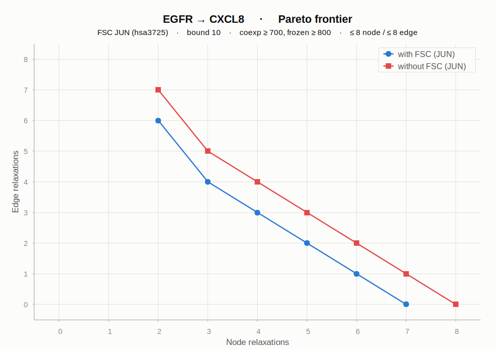

Excluding JUN raises the cost by +1 node across the whole frontier — JUN is a natural participant (a direct AP-1 activator of CXCL8/IL8).
Minimum relaxations — with FSC: 7 · without FSC: 8 → significant (natural participant).Note: The (n=7, e=0) corner of the without-FSC curve returned z3 unknown after a 4 h solve, so the +1 is strongly indicated but not machine-certified.

Pareto frontier of node vs edge relaxations. Blue circles = with FSC (JUN); red squares = without FSC. Each point below links to its explanation subgraph.